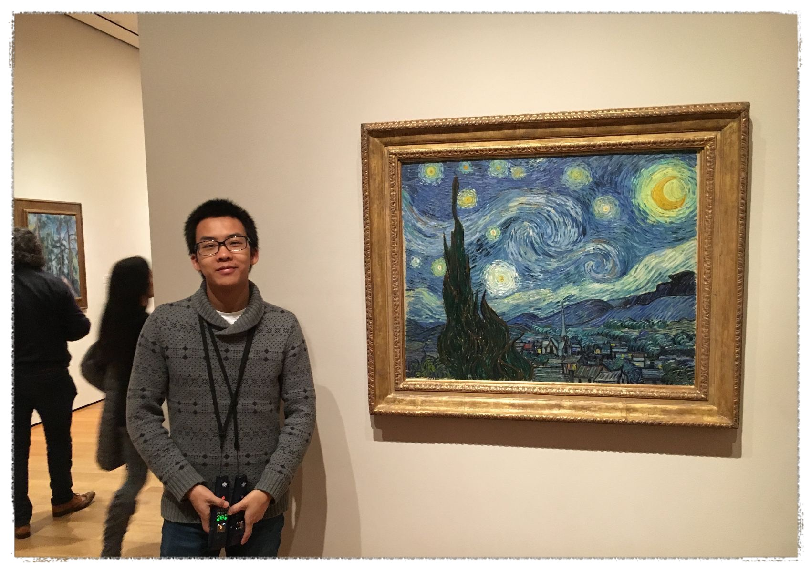
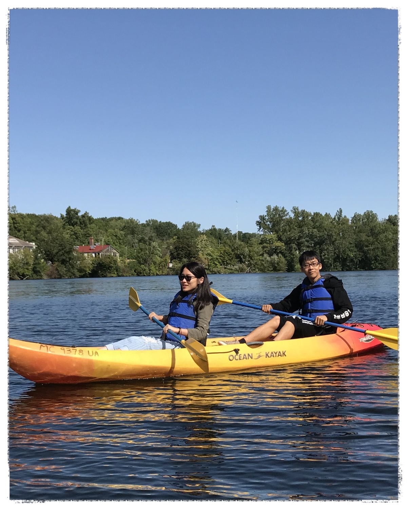

Allow Me to Introduce Myself
I’m a current graduate student in Electrical and Computer Engineering in the University of Michigan. My major is Signal Processing and Machine Learning. I’ve learned a lot about stuff of Machine Learning and Computer vision. I also self-taught a lot about data-structure and algorithm. I built some applications for mobile and web server. Popular libararies and frameworks I’ve used include MongoDB, Spring, Hibernate, React and Express. When I’m not working, I like learning unkowns, playing computer games and travelling with my friends.